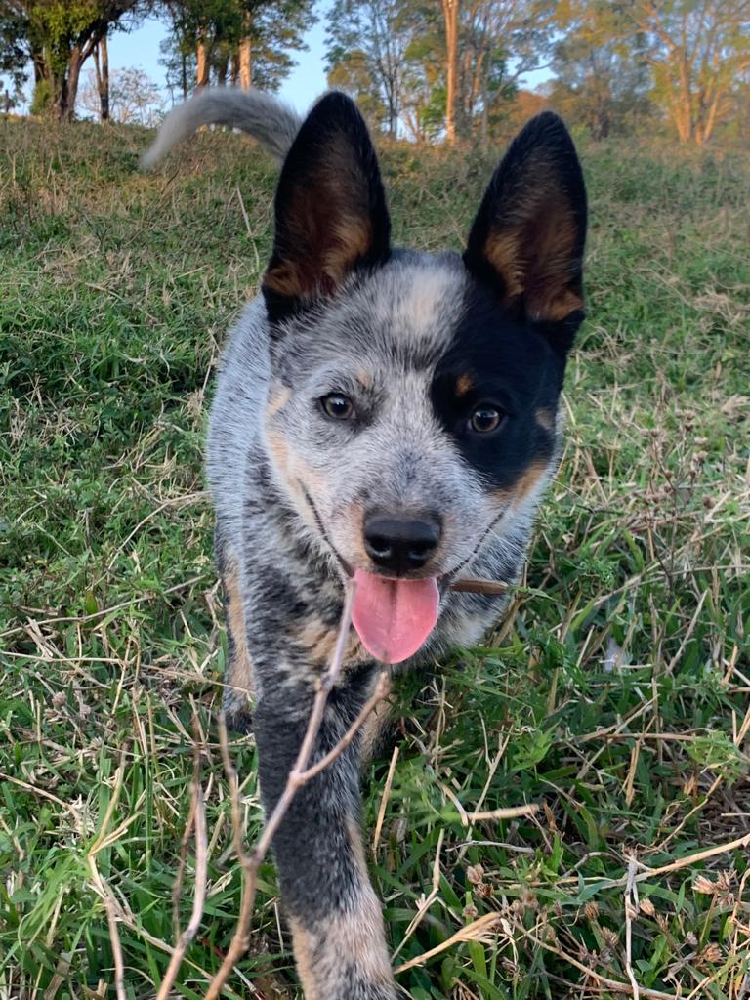
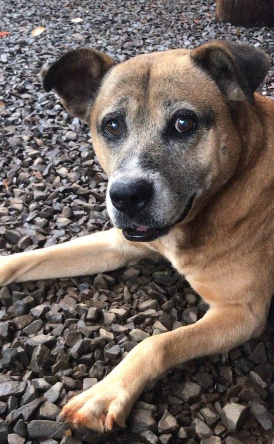

Eu sou uma pessoa muito caseira, então adoro ficar em casa e assistir filmes.
Meus estilos de filmes preferidos são:
* Aventura
* Comédia
* Romance
Eu também sou apaixonada por animais, em casa eu tenho dois cachorros:
A Meggie
Ela tem apenas dois aninhos, então ainda é filhote e ama brincar.
E o Tico
Sim, o nome é meio estranho, mas eu ganhei ele com uns 9 anos e não fazia ideia do que podia significar.
Ele é super carinhoso, mas já tem mais de 12 anos, então acaba dormindo a maior parte do dia.
Eu sou completamente apaixonada por eles!
Posso até falar que são meus calmantes!